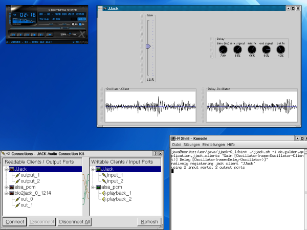

JJack is a JACK audio driver
for the Java Sound API
and a framework for the Java programming language
that allows Java applications to use the
JACK Audio Connection Kit.
Copyright © Jens
Gulden.
Licensed under the GNU
Lesser General Public License (LGPL).
This software comes with NO WARRANTY. See file LICENSE for details.
CONTENTS
OVERVIEW
FeaturesINSTALLATION
Running JJack
Developing JJack clients
THE JJACK SHELL APPLICATION
SynopsisTHE JJACK SYSTEM WRAPPER APPLICATION
Description
Options
Classpath
Usage Example
SynopsisJJACK SYSTEM PROPERTIES
Description
Options
Classpath
Usage Example
SynopsisENVIRONMENT
Description
JACK Audio Connection KitLIMITATIONS
Java Virtual Machine
Classpath
Library Path
SEE ALSO
Audio processor clients can be designed to:
lib/jjack.jar to the classpath of any Java application,
the Java Sound media subsystem automatically recognizes
the driver and adds a JJack device to the list of available
audio mixers. The native library lib/i386/Linux/libjjack.so (or according to your system)
must previously be made accessible to Java, either by copying it to /usr/lib/ (or according to your system),
or by passing -Djava.library.path=/lib/i386/Linux as parameter to the java runtime.For more details on the JJack API, refer to the Javadoc
API documentation. To get a quick overview, see the UML class diagram.
JJack uses the Java Native Interface (JNI) to access the JACK
daemon. Therefore, the native bridge library libjjack.so (on
Linux systems) needs to
be accessible by the Java Virtual Machine (JVM).
There are two ways to make sure the JVM can load the native bridge
library:
<jre-binary and classpath> [ jjack-system-properties ] JJack
[ -i=import-packages ] client-chain | -help
with
client-chain := client-class
[ parameters ]
{ monitor-chain } [ client-chain ]
monitor-chain := [ monitor-chain-members
]
monitor-chain-members := client-class
[ parameters ]
monitor-chain-members
| monitor-class
[ parameters ]
import-packages
:= package-name{,package-name}
parameters
:= (name=value{,name=value})
Mind the recursive definition of monitor-chain-members:
behind each member of a monitor-chain which is a client-class
(implementing JJackAudioProcuder), a new monitor chain can
again be started. However, any monitor-class ends a monitor-chain:
it is not possible to connect any more clients to a monitor-class,
because it only is a JJackAudioConsumer.
(JJack is a Java class located in the 'default'
package of the class tree, without any preceeding package qualifier.
All it does is delegating the call to its main-method to de.gulden.application.jjack.JJack. JJack exists for
shorter command line calls only.)
JJack loads, displays
and runs Java-based JACK audio processing clients. Such a client is any
Java class that implements the interface
de.gulden.framework.jjack.JJackAudioProcessor, as provided
by the JJack
framework API.
These steps are performed when the JJack shell
application is run:
A usage
example is given below.
Note that there are alternative
ways to deploy JJack audio processors:
| -c <filename> |
Load options, client-chain and monitor-chains
from a file, instead of expecting them on the command line. |
| -i <package-name(s)> |
Package name to search for client classes. This
allows shorter and better-readable specification of the client-chain
and monitor-chains. Multiple package names are to be seperated by
commas, without whitespace between them. |
Additionally, the behaviour of the underlying native bridge to JACK
can be controlled by specifying JJack
system properties.
The following example runs the "Gain control" JJack client (the current directory is assumed to be the JJack install directory):
java
-Djava.library.path=lib/i386/Linux -cp
lib/jjack.jar:lib/jjack-clients.jar JJack
de.gulden.application.jjack.clients.Gain
The next example deploys the delay effect JJack client. The client
is configured to be a mono device, as set by the JJack system
properties -Djjack...=... The delay's time-parameter and
effects-intensity are specified in round brackets. After the
delay-effect, a monitor chain is started, indicated by square brackets.
The monitor-chain contains the oscilloscope client, which displays the
generated waveform.
java
-Djava.library.path=lib/i386/Linux -Djjack.ports=1 -cp
lib/jjack.jar:lib/jjack-clients.jar JJack -i
de.gulden.application.jjack.clients "Delay(time=660,mixFx=30)" [
Oscilloscope ]
(Mind the quotation marks around "Delay(..)".
These are needed in a bash-shell to allow round brackets on the command
line.)
The screenshot below shows the
configuration of an interconnected JJack client invoked by
./jjack.sh -i
de.gulden.application.jjack.clients "Gain
[Oscilloscope(name=Oscilloscope-Client)] Delay
[Oscilloscope(name=Delay-Oscilloscope)]"
The JJack client's input is connected
to the xmms audio-player, using the qjackctl
patchbay application:

<jre-binary and classpath> [<jjack
system properties>] JJackSystem <wrapped main
application> <parameters of wrapped application> |
-help
In other words: call any Java program as you would do without JJack, but insert JJackSystem right before the original main class.
Applications that originally use the -jar <archive-file> option of the Java runtime-environment (JRE) must be invoked using the classic mechanism instead, by naming the main class right after JJackSystem and including the jar-archive in the classpath. (The main-class is specified in the archive's MANIFEST entry.)
(JJackSystem
is a Java class located in the default
package of the class tree, without any preceeding package qualifier.
All it does is delegating the call to its main-method to de.gulden.framework.jjack.JJackSystem.
JJackSystem exists for shorter command line calls only.)
The JJackSystem wrapper initializes the
native parts of JJack and registers the underlying JACK client prior to
running any other Java program. Depending on the system platform and
configuration JJack is running on, such a wrapper is needed to access
the native side and register a JJack client without thread collision,
as
early as possible, before the JVM's main thread exits.
E.g., this allows to run JJack clients
as JavaBeans inside Sun's BeanBuilder,
see Creating JJack clients with the
BeanBuilder.
These steps are performed when the JJackSystem
wrapper application is run:
A usage
example is given below.
Note that class
de.gulden.framework.jjack.JJackSystem is not only an
application
wrapper, but implements the central native interface to the JACK
daemon.
This example describes how to modify the original BeanBuilder
startup script to enable JJack support. See Creating
JJack clients with the BeanBuilder.
The BeanBuilder comes with a small default start script that looks
like this:
#! /usr/bin/sh
# Shell script to run the Bean Builder Application on 1.4 (and beyond)
#
# Usage: JAVA_HOME=/usr/local/java/jdk1.3/solaris run.sh [-p palettefile] [-i] [filename.xml]
#
# -where [-i] is interpret mode. Execute filename.xml without starting the Builder.
# -where [filename.xml] load the archived xml file.
# -where [-p palettefile] use "palettefile" as the Bean Builder palette
#
# Note: the -i and -p flags cannot be used simultaneously
CPATH=builder.jar:${JAVA_HOME}/lib/dt.jar:lib/jlfgr-1_0.jar
${JAVA_HOME}/bin/java -cp ${CPATH} Main $1 $2 $3 $4 $5
To manually prepare the BeanBuilder for deploying JJack clients, the
above script needs to be modified in 3 points.
1. adjust the classpath:
In order to use JJack clients inside the BeanBuilder, the JJack API classes must be present in the classpath. The script should be changed like this:JJACK_HOME=<jjack-install-dir>
CPATH=builder.jar:${JAVA_HOME}/lib/dt.jar:lib/jlfgr-1_0.jar:${JJACK_HOME}/lib/jjack.jar
2. set native library path:
The JVM must be told where to look for native library files. If you
did not install
the JJack native library libjjack.so
into your system's default library path (by copying or linking libjjack.so
there), set the Java system property
java.library.path to the desired directory:
${JAVA_HOME}/bin/java -cp ${CPATH} -Djava.library.path=${JJACK_HOME}/lib/i386/Linux Main $1 $2 $3 $4 $5
3. add the JJackSystem wrapper in front of the main-class call:
On some systems and configurations, it is necessary to make sure that JJack's native JACK client is allocated as early as possible, before program execution branches into child-threads. If you need this, place the wrapper application JJackSystem right before the original main class name in the command line:
${JAVA_HOME}/bin/java -cp ${CPATH} -Djava.library.path=${JJACK_HOME}/lib/i386/Linux JJackSystem Main $1 $2 $3 $4 $5
When the BeanBuilder has started, choose "Load Jar..." from the file
menu and select <jjack-install-dir>/lib/jjack-beans.jar
to make the JJack clients known to the BeanBuilder as JavaBeans. Then
you can work with the JJack clients as with any other JavaBean. By
using the add/remove-Monitor and add/remove-Chained event-listener
methods, complex interactions of JJack clients can be constructed. See Creating
JJack clients with the BeanBuilder for more details.
<jre-binary and options> -D<property>=<value>
-D<property>=<value>
... <application-and-options>
...
The JJack system properties are passed
to the Java virtual machine by using the -D flag on the command
line. Mind
that these options have to occur before the name of the Java
class invoked.
| -Djjack.client.name=name | Name of native JACK client to register. |
| -Djjack.ports=n | Number of input and output ports to be used.
Default: 2 (stereo) |
| -Djjack.ports.input=n | Number of input ports to be used, if different from output ports. |
| -Djjack.ports.output=n | Number of output ports to be used, if different from input ports. |
| -Djjack.ports.autoconnect=true|false | Sets whether to connect both input and output
ports to physical JACK ports. |
| -Djjack.ports.input.autoconnect=true|false | Sets whether to connect the input ports to physical JACK ports. |
| -Djjack.ports.output.autoconnect=true|false | Sets whether to connect the output ports to physical JACK ports. |
The current version of JJack has been tested with jackd
version 0.9.4 on a Debian 3.0 Linux system (version 0.80.0 of libjack.so).
Other versions or operating systems may or may not work.
(Please send a mail about your experience with another OS, especially
MacOS. Note that for use with platforms other than i386-Linux, the
native bridge library libjjack.so
needs to be compiled from the source files libjjack.c
and libjjack.h first.)
The testing environment's JACK daemon had been started manually from
an ordinary user account with access to the audio device by entering
jackd -v -d alsa -d hw:0 -r 44100 -s
There are many alternative ways for starting jackd, see
the JACK user documentation
for details.
Java Runtime Environment Version 1.4 (or higher) is required to run
JJack. This version newly introduces the memory mapped direct java.nio.ByteBuffer
class, which JJack makes intensive use of.
In order to run JJack, the following
components are needed in the classpath:
libjjack.so
there), set the Java system property
java.library.path to the desired directory:
${JAVA_HOME}/bin/java ... -Djava.library.path=${JJACK_HOME}/lib/i386/Linux ...
Some limitations and bugs apply to the current version:
JACK Audio Connection Kit
JACK user documentation
Java
BeanBuilder
Copyright
© Jens Gulden and others 2004-2007
Licensed under the LGPL.
{kind=link}